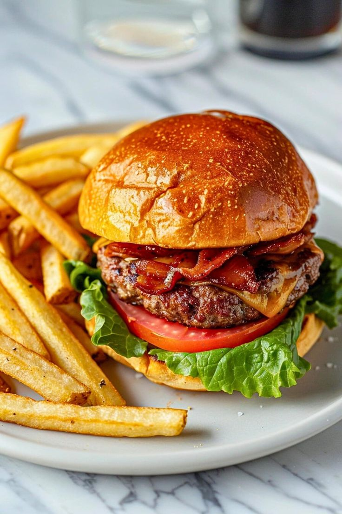

Burger

Servings: 4
Time Taken: 20 minutes
Ingredients:
- 750g Coles Finest Carbon Neutral Beef Mince
- 70g (1 cup) fresh breadcrumbs, made from day-old bread
- 1 large brown onion, grated
- 1/4 cup chopped fresh continental parsley leaves
- 2 garlic cloves, crushed
- 1 egg, lightly whisked
- 1 tbsp worcestershire sauce
- 2 tsp tabasco sauce, if using
- 2 tbsp olive oil
- 6 hamburger buns, halved
- 150g Coles Cheddar Cheese, thinly sliced
- 80ml (1/3 cup) American mustard (optional)
- 6 lettuce leaves
- 450g (about 3 medium) ripe tomatoes, sliced
- Tomato sauce, to serve
Method:
- Line a tray with baking paper.
- Place the beef mince, breadcrumbs, onion, parsley, garlic, egg, Worcestershire sauce and Tabasco sauce, if using, in large bowl.
- Use your hands to mix until just combined.
- Divide the mixture into 6 equal portions.
- Shape each portion with your hands into a patty about: 10cm in diameter and 1.5cm thick.
- Place the patties on prepared tray.
- Cover with plastic wrap and place in the fridge for at least 30 minutes to rest.
- Heat half (1tbs) the olive oil in a large non-stick frying pan over medium-low heat.
- Cook half the patties for about 4 minutes each side or until browned and cooked through.
- Transfer the patties to a plate. Set aside and cover to keep warm.
- Repeat with the remaining half (1tbs) the olive oiland patties.
- Meanwhile, preheat the grill on high.
- Line a baking tray with foil.
- Place the hamburger buns, cut-side up, under the grill and toast for 1 minute or until golden.
- Leave the grill on. Place the patties on prepared tray. Top patties with cheddar.
- Place under the grill for 1 minute or until the cheddar is just melted.
- Spread the bottom halves of the toasted hamburger buns with the mustard, if using.
- Top with the lettuce, tomato and patties.
- Dollop with tomato sauce.
- Cover with the hamburger bun tops to serve.